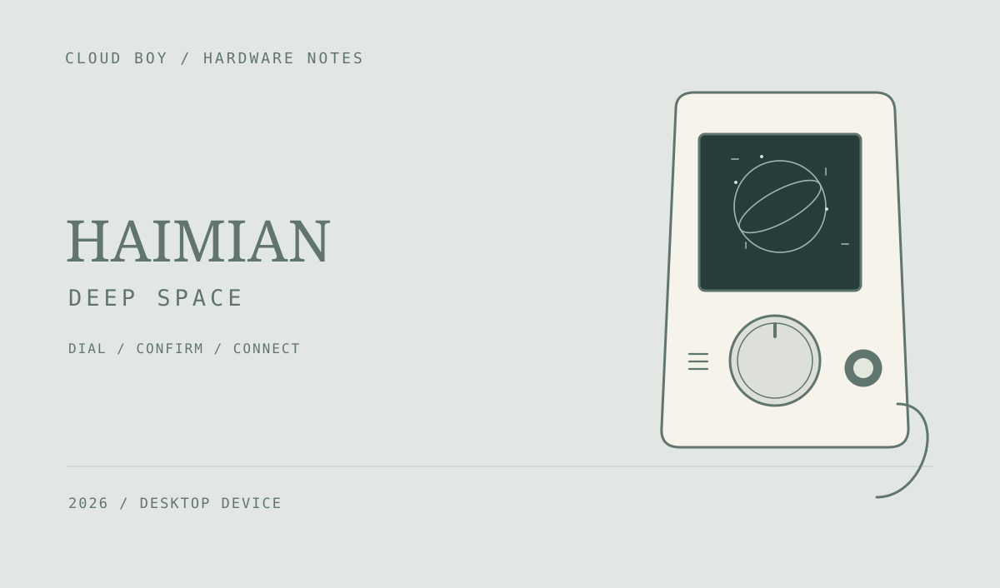

Haimian · 深空外设
把「深空」带到桌面：用旋钮选择、按键确认，在实体小屏上继续游戏。配合 Windows USB 控制台切换应用与主题，也能通过 WiFi 接入服务并接续存档。

旋钮、按键与三种应用
Haimian 把小屏、旋钮和确认按键放进一台桌面设备。旋转用于选择主题或选项，短按确认，长按切换功能，让屏幕中的内容通过实体操作继续展开。
配套教程展示了 Deep Space、额度屏和时钟三个应用。深空作为其中的游戏入口，可以在桌面小屏上显示内容并进行选择。
Windows USB 控制台
设备通过 USB 连接 Windows 后，可在配套控制台中查看连接状态或重新检测设备，再选择应用与主题并应用到小屏。控制台同时提供启动、停止和时间同步等入口。
应用与主题切换、时间同步可以通过 USB 在本地完成。控制台与实体设备各自承担配置和显示交互，让同一块小屏可以在不同应用之间切换。
WiFi 连接与存档接续
设备可进入 AP 配网模式，在配网页中选择 2.4 GHz WiFi，保存并重启后连接深空服务。游戏服务的交互需要网络连接。
配网页提供服务器设置和存档接续入口，可使用手机端已有的存档标识继续会话，让桌面外设与原有游戏进度接上。